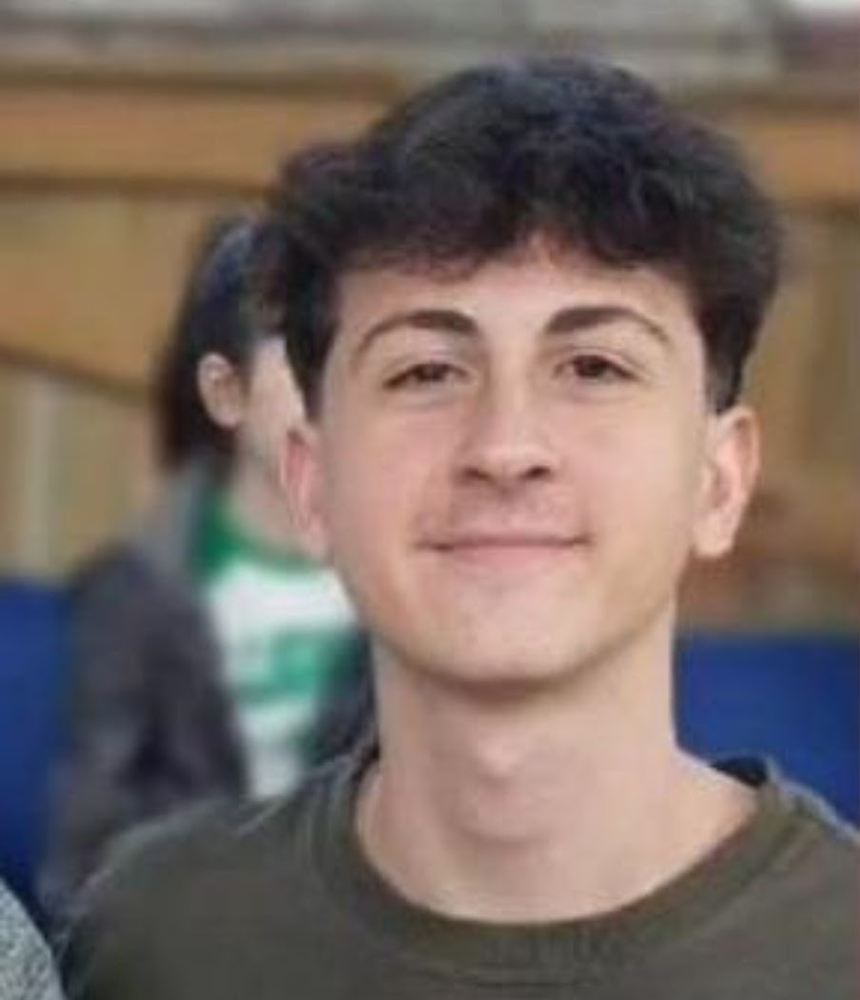

Eu me chamo Gustavo, nasci em Florianópolis em 06 de junho de 2008, onde moro até hoje. Em 2013, entrei na escola da ilha, onde permaneci por 10 anos e construí amizades que duram até hoje. Atualmente estudo no SESI SENAI no ensino médio integrado ao técnico em Análise e Desenvolvimento de Sistemas. Escolhi o curso técnico pois acredito que a programação vai contribuir para meu futuro profissional.